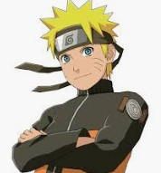
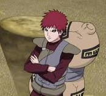
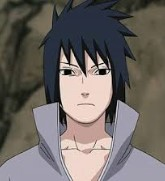

| No | Nama | Alamat | Jenis Kelamin | Hobi | Foto |
|---|---|---|---|---|---|
| 1 | Naruto | Konohagakure | Laki-laki | Makan |  |
| 2 | Gaara | Sunagakure | Laki-laki | Melamun |  |
| 3 | Sasuke | Konohagakure | Laki-laki | Lari dari kenyataan |  |
Naruto Uzumaki adalah seorang ninja dari desa Konoha (Konohagakure), sebuah desa fiktif yang konon tersembunyi di antara rimbunnya dedaunan hutan. Sejak kecil ia ditinggal oleh kedua orang tuanya, sehingga ia tidak pernah merasakan bagaimana kasih sayang orang tua kepada anaknya. Dengan dukungan dari teman-teman dan guru-gurunya, Naruto tumbuh menjadi pemuda yang ceria, optimis, dan pemberani. 10 Oktober adalah hari ulang tahun Naruto, dan merupakan Hari Olahraga dan Kesehatan ("Taiiku no hi" ) di Jepang (tempat dimana karakter ini dibuat), hari libur yang penuh dengan aktivitas olahraga dan fisik yang cocok untuk anak hiperaktif. Tetapi, hari itu dipindahkan ke Senin kedua bulan Oktober pada tahun 1999.
Gaara adalah seorang anak dari kazekage keempat yang mempunyai kekuatan untuk mengendalikan dan mengontrol pasir. Ciri khasnya adalah gentong pasir yang selalu dibawa-bawa di punggungnya dan luka bertuliskan "ai - cinta" pada dahinya. Setelah kematian ayahnya yang merupakan Kazekage, Gaara pun menjadi Kazekage berikutnya.
Sasuke Uchiha adalah seorang ninja jenius dari sebuah klan terkemuka di Konoha, Klan Uchiha. Klan Uchiha dikenal dengan garis keturunan khususnya yaitu Sharingan, begitu juga dengan kemampuan mereka menguasai elemen api. Klan ini juga memberikan kontribusi besar sebagai pasukan keamanan Konoha. Seperti kebanyakan anggota klan Uchiha, Cakra Sasuke lebih mengarah ke elemen api, tetapi dia juga dapat memanipulasi elemen listrik, seperti yang ditunjukkannya saat melakukan jurus Chidori. Sasuke juga berhasil menguasai jutsu Amaterasu yang dia dapat dari kakaknya, Itachi Uchiha.